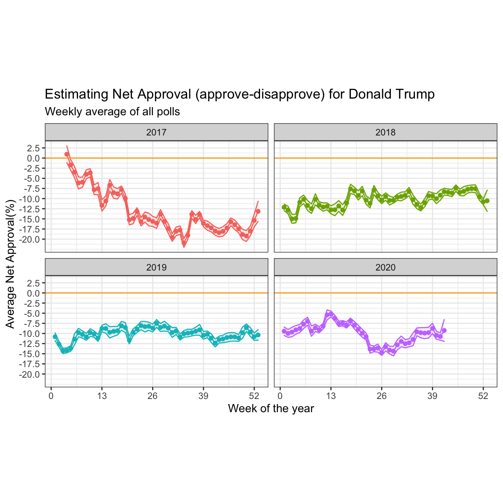

Trump’s Approval Margins
As we saw in class, fivethirtyeight.com has detailed data on all polls that track the president’s approval
# Import approval polls data
# or directly off fivethirtyeight website
approval_polllist <- read_csv('https://projects.fivethirtyeight.com/trump-approval-data/approval_polllist.csv')
glimpse(approval_polllist)
## Rows: 15,851
## Columns: 22
## $ president <chr> "Donald Trump", "Donald Trump", "Donald Trump", "…
## $ subgroup <chr> "All polls", "All polls", "All polls", "All polls…
## $ modeldate <chr> "10/20/2020", "10/20/2020", "10/20/2020", "10/20/…
## $ startdate <chr> "1/20/2017", "1/20/2017", "1/21/2017", "1/20/2017…
## $ enddate <chr> "1/22/2017", "1/22/2017", "1/23/2017", "1/24/2017…
## $ pollster <chr> "Morning Consult", "Gallup", "Gallup", "Ipsos", "…
## $ grade <chr> "B/C", "B", "B", "B-", "B+", "B", "C+", "B-", "B"…
## $ samplesize <dbl> 1992, 1500, 1500, 1632, 1190, 1500, 1500, 1651, 2…
## $ population <chr> "rv", "a", "a", "a", "rv", "a", "lv", "a", "a", "…
## $ weight <dbl> 0.680, 0.262, 0.243, 0.153, 1.514, 0.227, 0.200, …
## $ influence <dbl> 0, 0, 0, 0, 0, 0, 0, 0, 0, 0, 0, 0, 0, 0, 0, 0, 0…
## $ approve <dbl> 46.0, 45.0, 45.0, 42.1, 36.0, 46.0, 57.0, 42.3, 4…
## $ disapprove <dbl> 37.0, 45.0, 46.0, 45.2, 44.0, 45.0, 43.0, 45.8, 3…
## $ adjusted_approve <dbl> 45.5, 45.8, 45.8, 43.3, 37.7, 46.8, 51.6, 43.5, 4…
## $ adjusted_disapprove <dbl> 38.2, 43.6, 44.6, 43.9, 42.8, 43.6, 44.5, 44.5, 3…
## $ multiversions <chr> NA, NA, NA, NA, NA, NA, NA, NA, NA, NA, NA, NA, N…
## $ tracking <lgl> NA, TRUE, TRUE, TRUE, NA, TRUE, TRUE, TRUE, NA, T…
## $ url <chr> "http://static.politico.com/9b/13/82a3baf542ae901…
## $ poll_id <dbl> 49249, 49253, 49262, 49426, 49260, 49236, 49266, …
## $ question_id <dbl> 77261, 77265, 77274, 77599, 77272, 77248, 77278, …
## $ createddate <chr> "1/23/2017", "1/23/2017", "1/24/2017", "3/1/2017"…
## $ timestamp <chr> "07:34:31 20 Oct 2020", "07:34:31 20 Oct 2020", "…
# Use `lubridate` to fix dates, as they are given as characters.
Create a plot
We calculate the average net approval rate (approve- disapprove) for each week since he got into office. Then we plot the net approval, along with its 95% confidence interval. There are various dates given for each poll, please use enddate, i.e., the date the poll ended.
approval_data <- approval_polllist %>%
#filter(subgroup=="All polls", tracking=="TRUE") %>%
mutate(year = year(mdy(enddate)), week = week(mdy(enddate)),
net_approval=(approve-disapprove))
data_summary <- approval_data %>%
group_by(year, week) %>%
summarise(count = n(), avg_net_approval=mean(net_approval),sd=sd(net_approval),
se=sd/sqrt(count),
t_critical=qt(0.975,count-1),
lower_CI=avg_net_approval-t_critical*se, upper_CI=avg_net_approval+t_critical*se)
data_summary %>%
ggplot(aes(x=week, y=avg_net_approval,color=factor(year),fill=factor(year)))+
geom_point()+geom_line()+
facet_wrap(~year)+
geom_ribbon(aes(ymin=lower_CI, ymax=upper_CI), alpha=0.1)+
#change to theme_bw() to have white background + black frame around plot
theme_bw() +
labs (
title = "Estimating Net Approval (approve-disapprove) for Donald Trump",
subtitle = "Weekly average of all polls",
y = "Average Net Approval(%)",
x = "Week of the year"
) +
scale_x_continuous(breaks = seq(0,52,13))+scale_y_continuous(breaks = seq(-20,7.5,2.5))+
guides(fill=F, color=F)+
geom_hline(aes(yintercept=0), color="orange")+
theme(aspect.ratio=0.5)

We can facet by year, and add an orange line at zero. Our plot should look like this:

Compare Confidence Intervals
data_summary %>%
filter(year==2020,week %in% c(15,34))
## # A tibble: 2 x 9
## # Groups: year [1]
## year week count avg_net_approval sd se t_critical lower_CI upper_CI
## <dbl> <dbl> <int> <dbl> <dbl> <dbl> <dbl> <dbl> <dbl>
## 1 2020 15 94 -7.62 3.27 0.338 1.99 -8.29 -6.95
## 2 2020 34 84 -11.5 7.14 0.779 1.99 -13.0 -9.93
From the two-row table above, we can clearly see that the Trump’s net approval rate had fallen approximately 4 percents to -11.5% and its corresponding confidence intervals widened, too. It indicates voters were becoming more wavering and many of them transferred to Biden, especially after the Democratic National Convention held in 18 August.